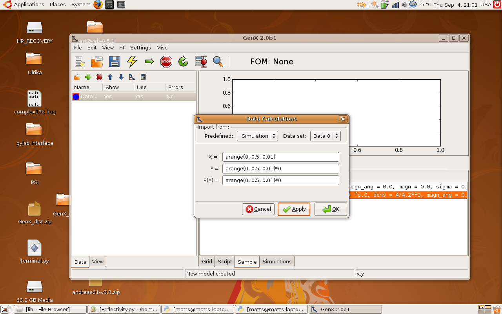
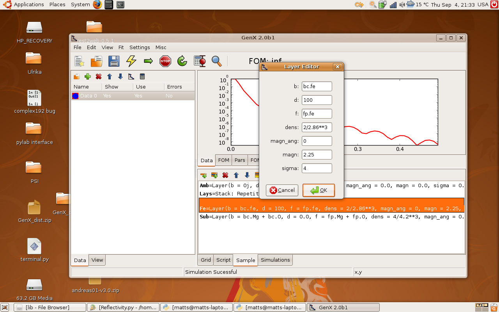
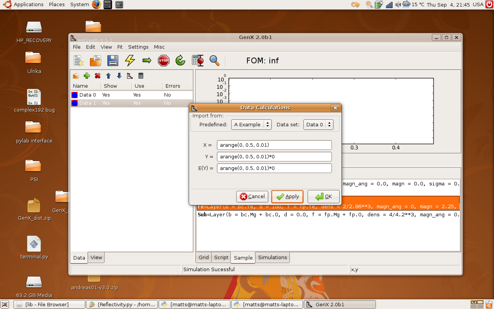

Getting started
Start by opening GenX. Load the reflectivity plugin by going to the menu Settings - Plugins - Load - Reflectivity. The computer will work abit then two new tabs will appear in the lower right section of the window, Sample and Simulations. This is where we will define our sample later.
Creating a sample
Time to create the sample! Click on the Sample tab to get up our main working area at the moment. Next, create a new model by clicking on the new model button on the main toolbar (1). This will bring up a dialog window (2). Choose the spec_nx model, this includes neutron simulations.

Making a substrate
So now we have the right model to simulate neutron reflectivty. The first step is to define a substrate. Double click on the substrate line in the list in the Sample tab, see below. This will pop up a dialog for feeding in numbers that defines the substrate layer. Put in the same numbers as the ones below. Note that the b box should say: bc.Mg + bc.O and in the f box should be fp.Mg + fp.O

So what does all this mean? Here is a short explanations
- b
- The neutron scattering length per formula unit in fm (fermi meter = 1e-15m)
- d
- The thickness of the layer in AA (Angstroms = 1e-10m)
- f
- The x-ray scattering length per formula unit in electrons. To be strict it is the number of Thompson scattering lengths for each formula unit.
- dens
- The density of formula units in units per Angstroms. Note the units!
- magn_ang
- The angle of the magnetic moment in degress. 0 degrees correspond to a moment collinear with the neutron spin.
- magn
- The magnetic moment per formula unit (same formula unit as b and dens refer to)
- sigma
- The root mean square roughness of the top interface of the layer in Angstroms.
Doing a simulation
Making artifical data
First we have make some x-data (q values) so we need what to simulate. First mark Data0 in the Data tab. Next, click on the calculator above it to the right. This gives a dialog box. Choose the alternative: Simulation in the Import from, Predefined choice box. Edit it so it looks like the picture below. Click OK. Note that some data has occured in the plot window now.
{kind=link}
Defing the instrument
Now we have to tell the program what we mean with the data we have given it. Click on the instrument icon in the Sample tab (1). This gives the follwing dialog. Change the probe to neutron and coords to q. Thats it for now. Click Ok.

Simulation
Press the simualtion button! (The big lightning in the main toolbar).
This should produce something like this:

Okay, we have total reflectivty edge. Change the plot to logscale instead.
Do this by going to the menu view - y-scale - log.
So mission completed we have the first neutron simulation.
Next step is to make a more complicated model and include polarized neutrons.
Adding Layers
Just simulating the reflectivity of a single substrate is not very fun.
So, lets add another layer. Why not a magnetic? so we can play around with magnetic
neutron reflectivity. Before we start adding layers we have to add a stack
which will contain the layers. So Add a stack by clicking on the second
toolbar button in the sample tab (The one with a stack of layers and a plus).
Name it to Lays for example (In the popup dialog).
Now we can add a layer (First button with one layer and a plus),
call it Fe for example. Look on the screenshot below for the
parameters.

{kind=link}
Click on the simulate button again and have look at some Kiessig fringes.
Polarised Neutron Refelctivity
Lets start the polarized neutron reflectivty by turining the
polarization on in the clalculations. Go to the instrument
again and choose probe: neutron pol. At the same have look
at the values for the pol parameter. That is the polarisation state
of the instrument: uu, dd or ud. The last one is only valid
for spin-flip calculations. Press simulate again and observe the
change in the curve on the screen. For fun, change the polarisation to
dd and observe the other spin channel.
It would be nice to see both spin channels at the same time...
But then we need two data sets.

Two spin channels
Adding a new data set
Add a new data set by clicking on the Add data button, the green cross above the
data list. Clicking on that gives a new data set: Data 1. Mark it and click on
the calculator again. Now instead of typing all that we had to the last time we import
the calculations from Data 0. Click on the choice box at the top left and choose Data 0.
Voila! The calculations is imported. Clik on Ok. It should look like this:

{kind=link}
Making two different simulations
So now we have to data sets but we have to tie them to two different polarization states.
How do we do that?
Start by going to the simulation tab. Mark data set 0 in the list. Click the green button above
and the a dilog box appears. Make the inputs look like this:

Note that the last box has to have quotation mark around it it should read 'uu'.
Next, do the same for Data1. Mark the item in the list and click the green plus.
This time the last box should read 'dd'.

Okay everything is set up now press simulate and ther we go: Two different spin channels
in the same plot.
Finishing off
Perhaps the names are not so exciting, Data0 and Data1. They can be renamed by a slow double click on the name in data tab. Perhaps uu and dd is more appropriate. Also the colour on the line can be changes so you can tell the differnce. Mark one data set and click on the plot symbol in the small toolbar in data tab. You can then change the colour and linewidth.
You can of course do other things and not only spin polarized calculations. Perhaps simulating the x-ray reflectivty of the same sample? Just remeber that the wavelength has to set as well as the probe. I guess that you can think of a couple other uses.
Last updated: